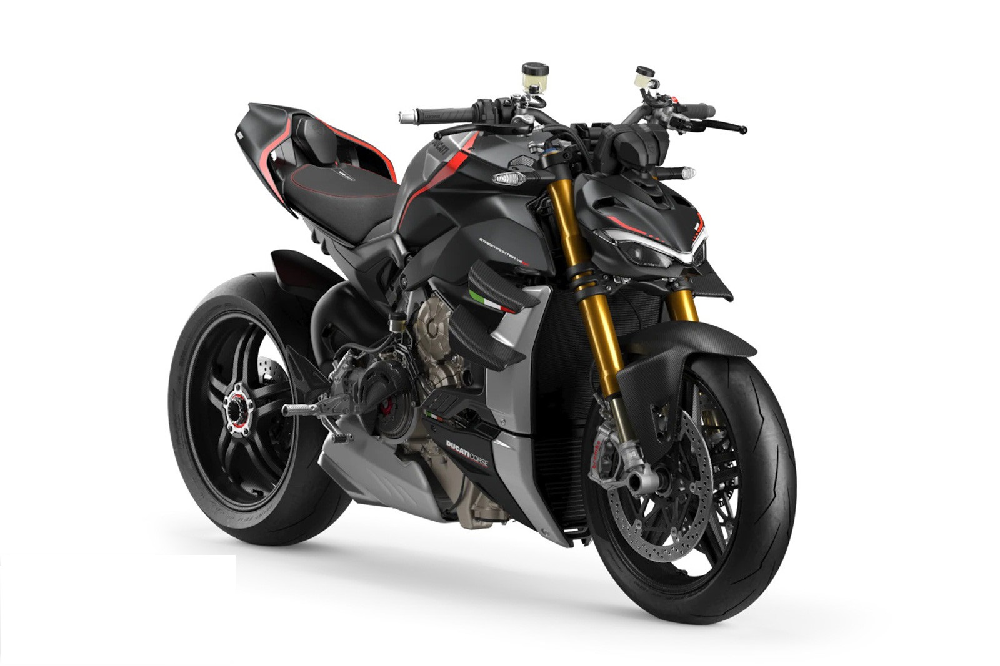
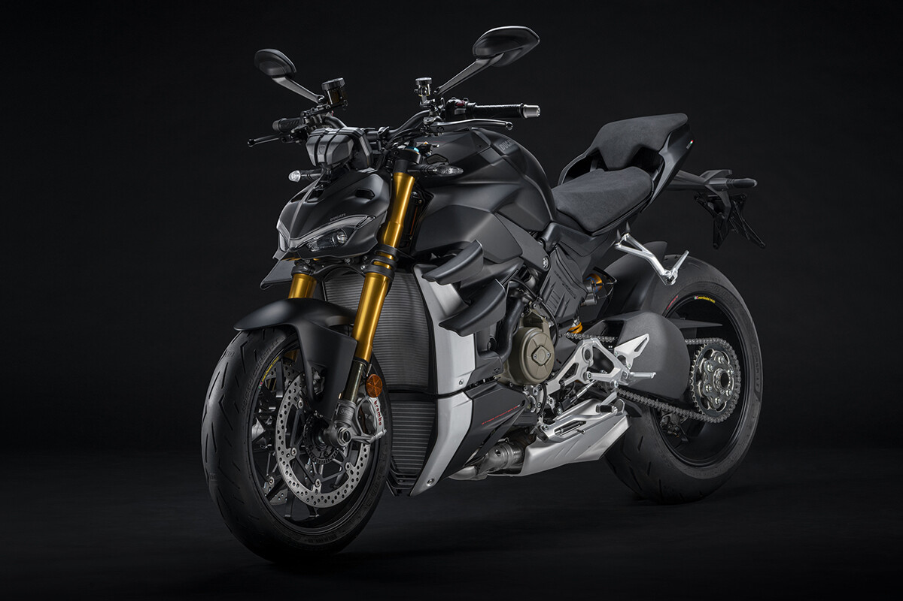

Este año ha sido complicado por culpa de la pandemia. El coronavirus entre otras cosas nos dejó sin poder acudir a la puesta de largo de una de las motos más brutales de este 2020, pero ya ha llegado la hora. Hemos probado la Ducati Streetfighter V4, y no, no nos ha defraudado.
Esta naked no es un lobo con piel de cordero, es sencillamente un lobo desnudo. Toda una deportiva de pura raza despojada de su carenado y con unos cambios mínimos para hacerla algo menos habitable pero igual de extrema. Y lo sentimos por el spoiler, pero es que no hay otra manera de introducir a esta portentosa moto de manillar ancho.

